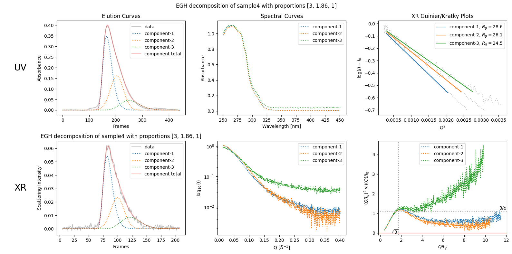
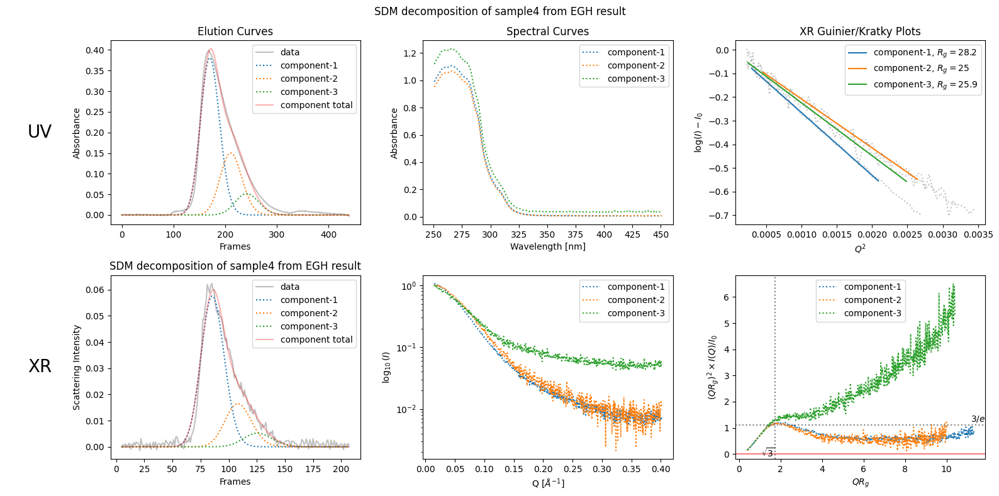
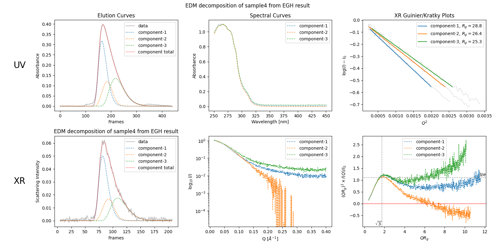

8. Advanced Elution Models#
8.1. Preliminary Decomposition#
Advanced models are usually harder to fit compared to EGH model which is the default. Therefore, we make it a rule to first decompose using EGH model and proceed to advanced models based on the first result. This rule is formalized in a coding rule as follows:
you have to use ssd.quick_decomposition() as the first step to make a decomosition object,
then using the result, you can proceed to decomosition.optimize_with_model().
This second step provides advanced models, which are eihther SDM or EDM.
from molass import get_version
assert get_version() >= '0.7.4', "This tutorial requires molass version 0.7.4 or higher."
from molass_legacy import get_version
assert get_version() >= '0.4.0', "This tutorial requires molass_legacy version 0.4.0 or higher."
from molass_data import get_version
assert get_version() >= '0.3.0', "This tutorial requires molass_data version 0.3.0 or higher."
from molass_data import SAMPLE4
from molass.DataObjects import SecSaxsData as SSD
ssd = SSD(SAMPLE4)
trimmed_ssd = ssd.trimmed_copy()
corrected_ssd = trimmed_ssd.corrected_copy()
decomposition = corrected_ssd.quick_decomposition(proportions=[3., 1.85714286, 1.])
decomposition.plot_components(title="EGH decomposition of sample4 with proportions [3, 1.86, 1]");

8.2. Stochastic Models#
8.2.1. Stochastic Dispersive Model#
sdm_decomposition = decomposition.optimize_with_model('SDM', debug=False)
sdm_decomposition.plot_components(title="SDM decomposition of sample4 from EGH result");

8.3. Kinetic Models#
8.3.1. Equilibrium Dispersive Model#
edm_decomposition = decomposition.optimize_with_model('EDM', debug=False)
edm_decomposition.plot_components(title="EDM decomposition of sample4 from EGH result");
guess_init_params: M2= 74.57597297722981
area ratio= 0.36132973107272454
guess_init_params: M2= 134.61576060205115
area ratio= 0.35559694660498437
C:\Program Files\Python313\Lib\site-packages\molass_legacy\SecTheory\Edm.py:134: RuntimeWarning: invalid value encountered in sqrt
W = np.sqrt(np.pi*tau/RPe)
C:\Program Files\Python313\Lib\site-packages\molass_legacy\SecTheory\Edm.py:135: RuntimeWarning: invalid value encountered in sqrt
Y = xi/(2*np.sqrt(tau/RPe))
C:\Program Files\Python313\Lib\site-packages\molass_legacy\SecTheory\Edm.py:140: RuntimeWarning: overflow encountered in exp
numer = U*(expB - 1)*np.exp(-V)
guess_init_params: M2= 293.6976710792499
area ratio= 0.3521629344551637
